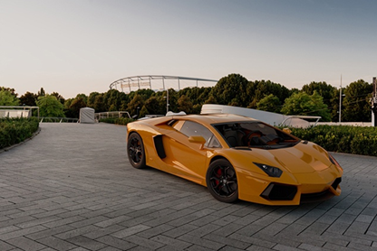
shadow_matte 着色器应用于地板平面
本教程将介绍如何使用外部 HDRI 和背板图像对汽车模型进行照明、着色和渲染。本教程将演示如何使用以下项对汽车模型进行照明：Arnold skydome_light。介绍如何使用 car_paint 和 standard_surface 着色器逼真地对汽车模型进行着色。我们还将使用 shadow_matte 着色器将汽车模型合成到摄影背板中。
Maya 不支持 .SLDPRT 和 .SLDASM 文件。您可以下载试用版 3ds Max，然后将其导出为 Maya 可以打开的文件，例如 .stp。或者，您可以尝试打开文件 01-AVENTADOR LP700.STEP。但要注意的是，它将以大型 NURBS 数据集方式打开。
现在，我们要将摄影背板导入 MtoA。
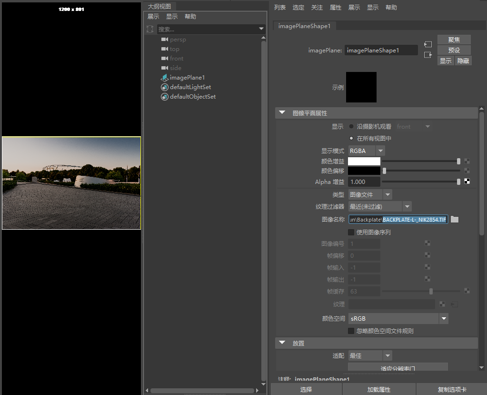
BACKPLATE-L-_NIK2854.TIF -> RenderCam -> 图像平面
为了对场景进行照明，我们将 HDRI 连接到 _skydome_light.color_。
在 Hypershade 窗口中创建一个图像着色器，然后在“图像名称”(Image Name)中打开 DA-STR-MB1-HDR-B-4K-SPEED+96.exr。
将图像着色器拖动到 skydome_light ->*“颜色”(Color)*上。
旋转 skydome_light，使其与背板中照明的方向匹配（大约 90 度）。
您可能必须将 skydome_light 的 exposure 增加 1 档或 2 档光圈（具体取决于 HDRI）。
将灯光采样数增加到 3（skydome_light 的“渲染”(Rendering)选项卡）。
如果您不确定照明的外观，请向场景中添加一个球体，为其指定一个 standard_surface 着色器，并将 metalness 增加到 1。这将为您提供一个镀铬球体，可使用该球体将反射与背板进行匹配。您还可以使用暗灰色着色器创建另一个球体，也可使用该球体来匹配照明。
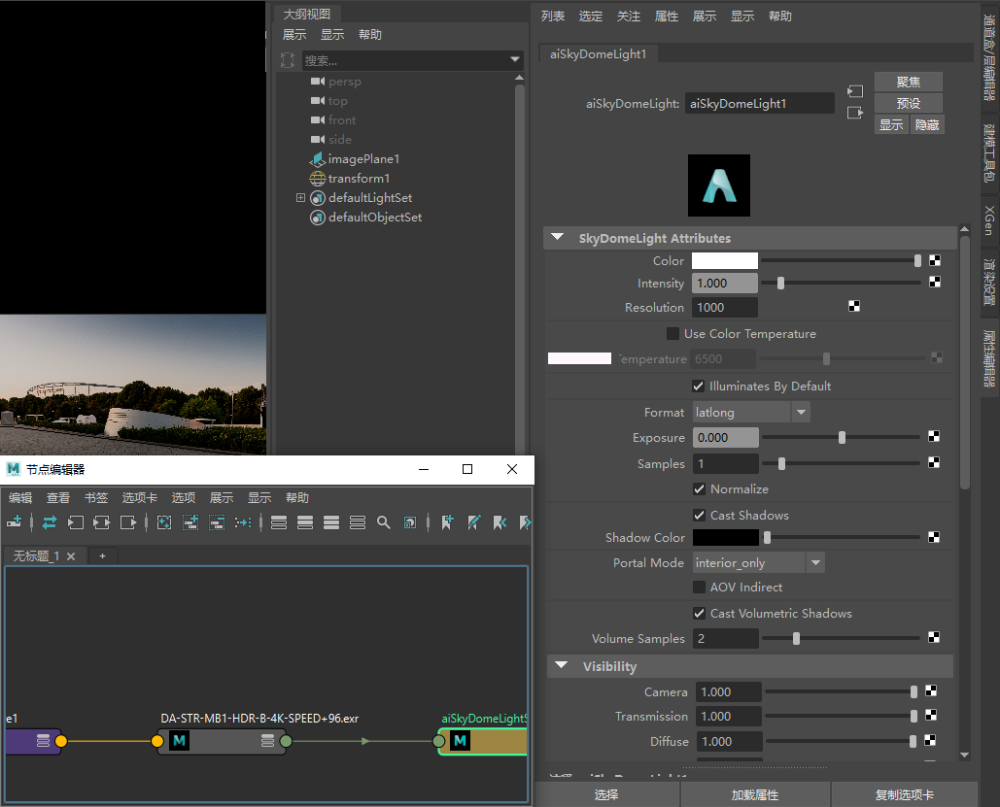
DA-STR-MB1-HDR-B-4K-SPEED+96.exr -> skydome_light -> 颜色/强度 -> 纹理
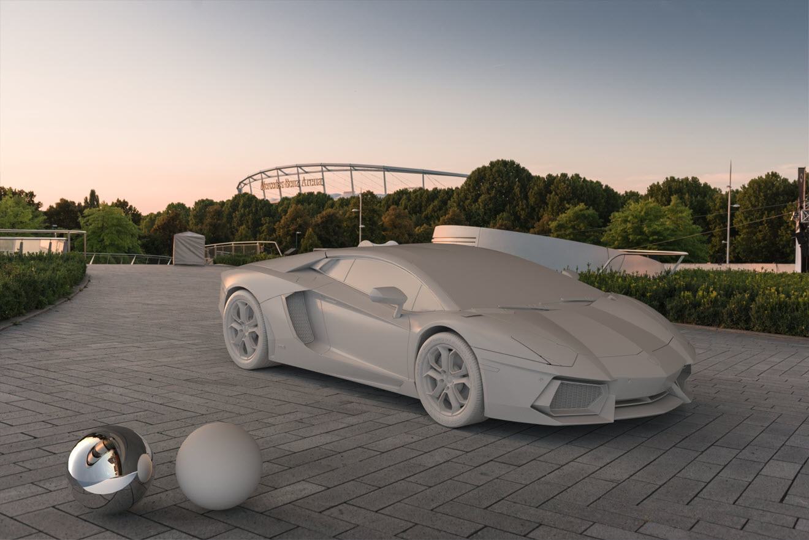
如果我们靠近看，可以看到地板平面在反射球体中的反射并不完全正确。在镜面反射中可见的某些区域可能会超出背景图版，这些区域称为“屏幕外区域”。shadow_matte.offscreen_color 参数定义用于这些屏幕外区域的颜色，例如，您可以为实例链接一个纹理。
| 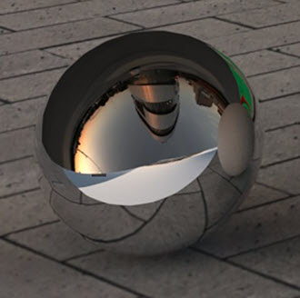 | 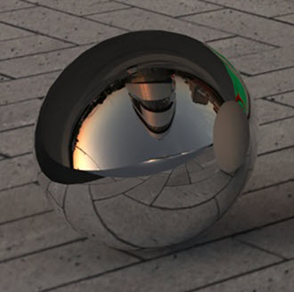 |
| 未使用 offscreen_color | 使用 offscreen_color（默认值） |
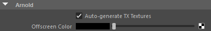
“屏幕外颜色”(Offscreen Color)位于图像平面的 Arnold 属性下。shadow_matte.background 设置为 background_color。
对照明和环境满意后，现在要开始对汽车进行着色。出于本教程的目的，我们将重点介绍汽车涂料。可以在页面顶部的链接中下载其他汽车材质（挡风玻璃、轮缘、塑料等）。
现在，我们创建一个双色调 car_paint 着色器，并将其应用于车身几何体。
| 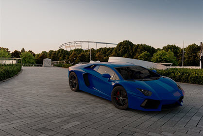 | 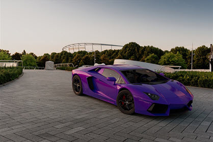 |
| Base_color：蓝色（使用默认设置） | 双色调 car_paint。Base_color：蓝色，specular_color：紫色。 |
更改以下参数：
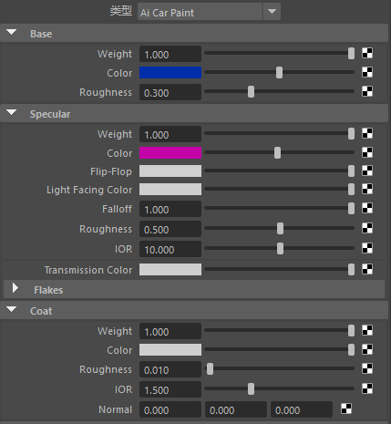
双色调 car_paint 属性设置
现在，我们开始对前灯进行着色。
渲染玻璃和金属（以及漫反射曲面）时，几何体的法线应朝向正确的方向，这一点非常重要，否则在渲染时可能会得到不正确的结果。从其他 CAD 应用程序导入模型时，如果曲面的法线方向可以反转，这可能会导致出现问题。
具有许多镜面反射曲面（如前灯）的场景需要较高的 specular_ray_depth 值才能正确显示。specular_ray_depth 定义光线可镜面反射的最大次数。
| 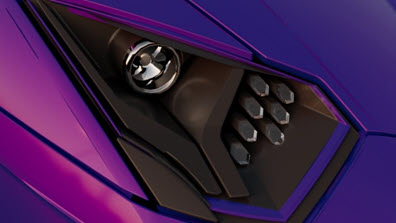 | 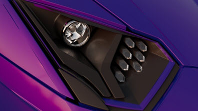 |
左：specular_ray_depth：2（默认值）。右：specular_ray_depth：6。
灯泡前面的那块玻璃 (01-HEADLIGHTS-1-surface12) 是单面几何体。Thin_walled 非常适用于薄（单面）对象，例如气泡。
建议仅将 thin_walled 用于较薄的对象（单面几何体），因为具有厚度的对象可能无法正确渲染。
就是这样。您已看完本教程。做得不错！我们建议您多花一些时间阅读 MtoA 用户手册，该手册中提供了像本教程这样的其他教程。
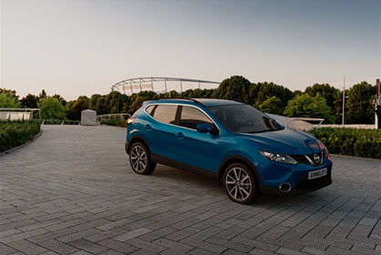